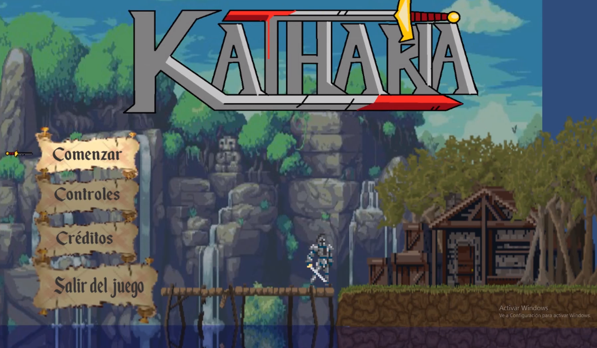
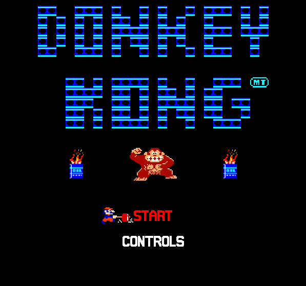
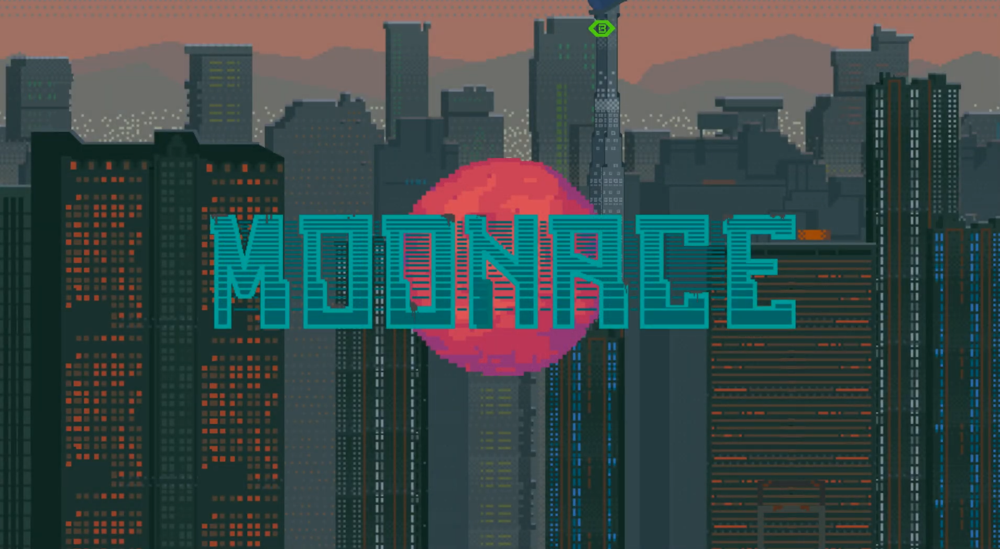
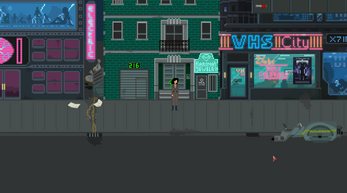
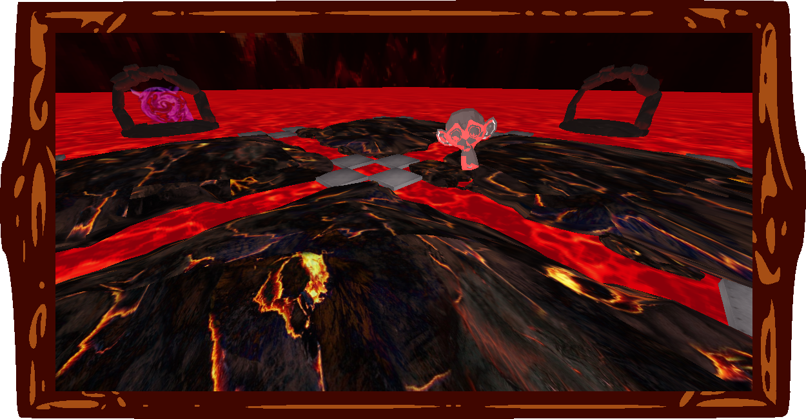
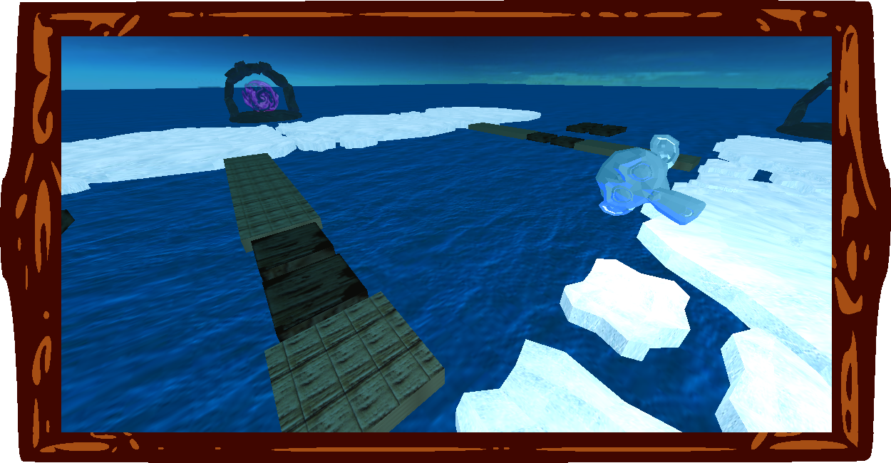
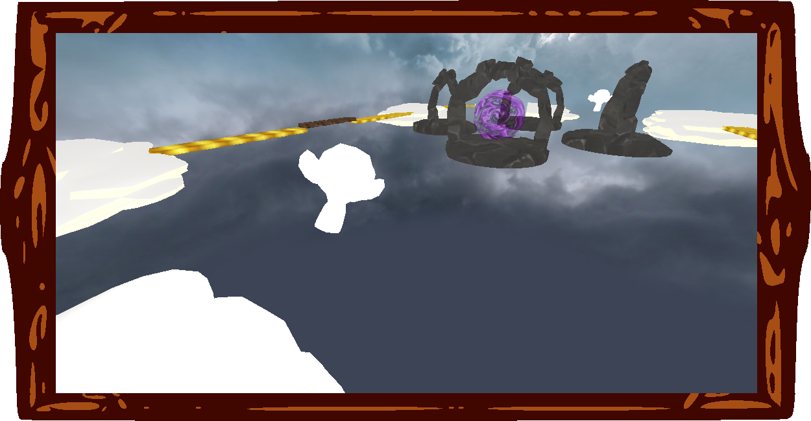

Gonzalo Sanz Lastra
Projects
Katharia - 2017
This was the first "big" project i took part of. Katharia is a 2D RPG platformer game inspired by other titles like Dark souls, in which you will have to free the kingdom of Katharia from the evil antagonist Gallus. Because it was the first game we made, it was developed with the Unity engine and coded in C#, all of this by four people.

By that time we did not know about the existence of github, so sadly you can't find it in any repository.
Original Donkey Kong - 2017
This is basiclly a clone of the original arcade game Donkey Kong, made with the phaser engine and coded in javascript, making this the first browser game i took part of.

You can play it from your browser here.
Moonace - 2018
Moonace is a 2D graphic adventure videogame based on a cyberpunk future in which the player is a homicide detective and must resolve several crimes.
This videogame is a 2D graphic adventure based on a cyberpunk dystopian universe where you as a detective have to resolve several cases of different crimes.
This has been the project with the most people I have ever worked on, counting 8 members in it. It was made in a self-made little engine with the same ideas as the Unity Engine and coded in C++.
 
You can find the Moonace project here.
Holy Spoons - 2019
Holy Spoons is a FPS rogue-like game where the player has to survive waves of enemies with different sets of weapons and stat based power-ups. Again, this project was developed in a not-so-little selfmade Engine using Ogre as the rendering part of it, nvidia Physx as the physics engine and irrKlang as the sound Engine. The engine has an architecture similar to Unity's, using entities, objects and components. All of this was coded using C++ and the IDE Visual Studio.  
You can find the Holy Spoons project here.
AI projects - 2019
Using Unity and some of its path finding algorithms and AI related tools (like navigation meshes), i made some AI projects including an AI that plays football or another AI that plays Cluedo.
You can find them here.
PS4 projects - 2019
I made various multiplatform (PC and PS4) applications and games, like the classic arcade videogame West Bank, using PS4 SDKs and coded in C++.
You can find the repository of the PC version of the game here.
Android games - 2019
Using C# and unity as well as Android Studio and Java i made some multiplatform (Android and PC) games, using my own architecture for it to work on both platforms.
You can find some of them
here.
Telemetry system - 2020
I made a telemetry system that sends information about games while they are being played to analyse their mechanics and gameplay balance via server using several threads. It was programmed in C++ by five people
and can be used in any game. We stablished the telemetry system in the Moonace project to balance its mechanics and puzzles.
You can find it here.
Continuous integration system - 2020
I made a continuous integration system with other four people in C++ and using Jenkins. This system allows to track the changes made to a project and determines if they are correct or produce new errors that
decay the project.
You can find it here.
Final graduate project - 2020
This project consists on an interactive application in order to render fractal terrains through the Ray Marching algorithm and vertex mesh models using the classic rendering pipeline . Collision
points between them can be calculated, allowing a simple, physical movement of the model upon the created surfaces . Furthermore, the application lets OpenGL and Vulkan to be used, with
GLSL as shading language. This results on a scene with an object controlled by the player that can explore several terrains created through 3D fractals.
This project has been programmed in C++ using Visual Studio.


You can find the TFG project here.
Smaller projects
I also made several smaller projects including a dynamic music engine in Unity to add soundtracks to videogames, an artificial image recognition via machine learning methods (in python), 3D character animations and modelling, cloud and big data based applications and realistic physics simulations. All of this projects can be found on my github page.